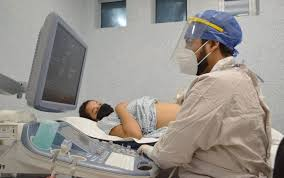

Complicaciones en los embarazos adolescentes
El embarazo en la adolescencia puede ocasionar serios problemas de salud a la mamá y al bebé, debido a que el organismo de ella no se ha desarrollado por completo. Los riesgos más comunes son aborto espontáneo o inducido en lugares clandestinos, lo cual trae como consecuencia mayor riesgo de mortalidad materna.
El embarazo en una madre adolescente, desde el momento de su concepción, constituye por sí solo un alto riesgo obstétrico, pues son múltiples las complicaciones a las que está expuesta la futura madre y el feto en todo el desarrollo de la gestación y en el momento del parto
El riesgo de presentar complicaciones va a estar en relación de la edad de la madre, la edad gestacional, las características biológicas de la madre y el feto, así como la influencia socioeconómica y del apoyo de la pareja y de la familia. El embarazo en la adolescencia, además de constituir un riesgo médico elevado, lleva aparejado dificultades socioeconómicas y emocionales para la madre y su hijo, lo que se conoce como el "Síndrome del fracaso".La principal repercusión social es la mal planificación familiar. La mujer joven se enfrenta, en general, a una situación para la que no está preparada emocionalmente. Si lleva el embarazo a término tendrá que aceptar su nuevo rol de madre, hacerse cargo de los cuidados, atención y educación de su hijo, a pesar de que ella aún no ha consolidado su formación y desarrollo.
Estudios aseguran que las consecuencias desagradables que con mayor frecuencia acompañan al embarazo en la adolescencia son: un mal rendimiento escolar, la interrupción de los estudios y de la preparación técnico-profesional. Las adolescentes que son madres tienen menos posibilidades de graduarse en la escuela y menos oportunidades de empleo.
Es frecuente que estos embarazos se presenten como un evento no deseado, lo que determina una actitud de rechazo y ocultamiento de condición por temor a la reacciona de su grupo familiar.
- En la madre
- En el hijo
Las madres adolescentes (de 10 a 19 años) tienen mayor riesgo de eclampsia, endometritis puerperal e infecciones sistémicas que las mujeres de 20 a 24 años, y los bebés de madres adolescentes tienen un mayor riesgo de padecer bajo peso al nacer, nacimiento prematuro y afección neonatal grave.
Los embarazos tempranos son la principal causa de mortalidad de las niñas de 15 a 19 años en los países en desarrollo. Este tipo de gestación incrementa el riesgo de aborto espontáneo o nacimiento prematuro del bebé. Las niñas de 10 a 14 años tienen hasta cinco veces más posibilidades de morir.
La anemia es una complicación muy frecuente, en su mayoría aparece antes del embarazo por la pérdida de sangre que se produce durante la menstruación y una mala higiene dietética. Corregir el estado de la hemoglobina es de vital importancia para la oxigenación del feto y para el momento del parto. Actualmente se le indican a toda mujer en edad reproductiva las tabletas prenatales para aquellas con trastornos anémicos y seis meses antes de querer quedar embarazadas.
En las adolescentes embarazadas existe un alto riesgo de desarrollar una enfermedad gestacional hipertensiva debido a la corta edad de la madre, la cual representa un alto peligro en la vida de la madre y el feto; la que se relaciona con el parto pretérmino, alteraciones neurológicas como convulsiones, alteraciones metabólicas del feto, crecimiento intrauterino retardado, sangramientos gestacionales, insuficiencia placentaria, complicaciones puerperales, la muerte materna y muerte fetal.
Otra complicación es el embarazo ectópico, pues constituye un peligro para la vida de la adolescente y la función reproductiva en un futuro debido a las consecuencias de una intervención quirúrgica al extirpar órganos esenciales de la función reproductiva; la mayoría de los embarazos ectópicos vienen dado por poco desarrollo de los órganos que participan en la fecundación y la implantación del ovulo fecundado, anomalías constitucionales, enfermedad inflamatoria pélvica por infecciones, dispositivos intrauterinos, entre otras.
El bajo peso al nacer se encuentra entre las complicaciones más frecuente presente en recién nacidos de madres adolescentes. Este factor es en todo el mundo y en grupos de poblaciones el índice más importante para estipular las posibilidades del recién nacido de sobrevivir y poseer un crecimiento sano. Constituye uno de los principales problemas obstétricos vigentes, presentes en el 6 y 7 % de los nacimientos, y está relacionado con más del 75 % de la mortalidad perinatal.

El riesgo de parto pretérmino (riesgo de presentar un parto que se establece entre las 22 semanas de gestación y 36.6 semanas) y la inmaduración pulmonar fetal, son complicaciones fetales frecuentes; se relacionan con complicaciones maternas como la enfermedad hipertensiva gestacional, alteraciones estructurales a nivel del cuello del útero (permeabilidad del cuello, dilatación del canal endocervical, tamaño del cuello útero menor de 25mm), infecciones, entre otras. Todo esto se relaciona a un trabajo de parto pretérmino en el que el feto no ha terminado la maduración pulmonar total y sobrevienen complicaciones respiratorias fetales como la enfermedad de membrana hialina, la asfixia, el distres respiratorio, infecciones respiratorias, muerte fetal, entre otras. Por este motivo a toda madre adolescente con riesgo de prematuridad se le indica la maduración pulmonar fetal a partir de las 28 semanas de gestación para evitar complicaciones respiratorias fetales y mayor maduración de los segmentos pulmonares por si se presenta un parto en el que no se llegó al término de la gestación.
El crecimiento intrauterino retardado (CIUR) es frecuente en fetos de gestantes adolescentes. Presenta estrecha relación con el bajo peso al nacer. Su repercusión en el embarazo es causa de un recién nacido propenso a presentar sepsis y otras enfermedades, que constituyen un alto riesgo y se convierten en un problema biológico y social. Se ha confirmado que la mortalidad infantil en este grupo duplica o triplica la de los neonatos de madres mayores de 20 años. El CIUR en muchas ocasiones es causado por alteraciones en la valoración nutricional y las deficiencias higiénico-dietéticas en la madre, malformaciones congénitas, enfermedad gestacional hipertensiva, déficit de la función placentaria, hábitos tóxicos, drogadicción e infecciones.